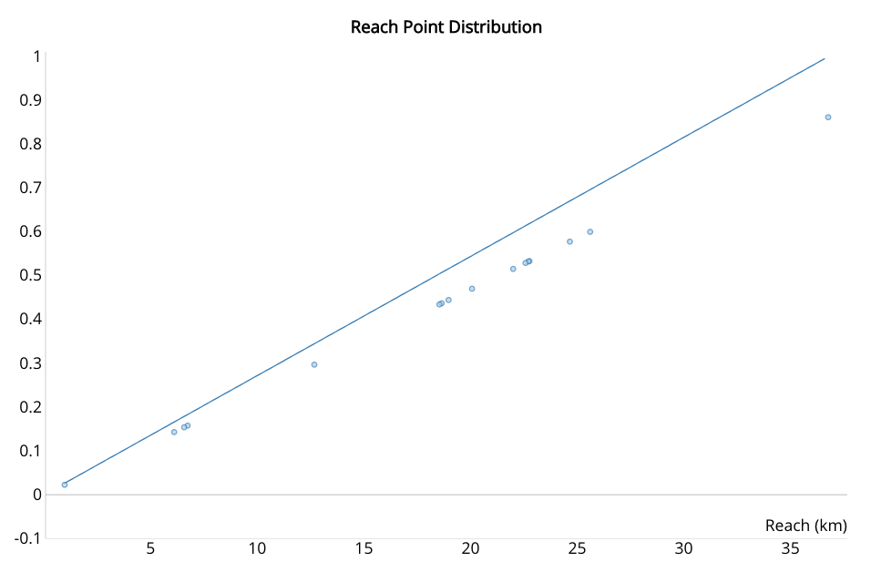

Point Fractions Fitting the Curve
March 1, 2019
Point Fractions Fitting the Curve
March 1, 2019
Graphing the equations for how points are divided up and overlaying the fractional allocation of points is a good visual check that the implementation is lining up with expectations, lining up with the equations written into the GAP rules.
Doing this helped me find some bugs I had made transcribing these equations into code.
The equation for the allocation of points for reach, the linear distance flown irrespective of where the pilot lands or how difficult the courseline, is a simple ratio.
When I was not including the pilots making it to the end of the speed section the awarded fraction of reach points were not lying along the expected line.
Broken

Fixed
I'd made an error in transcribing the above equation for allocating the fraction of time points to each pilot.
Broken

Fixed

I'd made an similar error with leading points.
Broken
Fixed